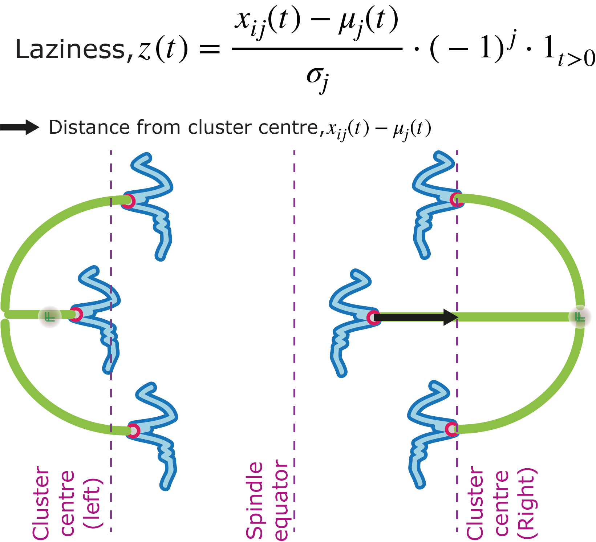

Inference and stochastic modelling
applied to cell and developmental biology
Below is a summary of my current and previous research

Current Research
Modelling of chromosome dynamics
During cell division, chromosomes are released from the nucleus at nuclear envelope breakdown and congress to the cell equator to form the metaphase plate. Chromosomes subsequently segregate to form two daughter cells. We use a modelling framework based on force-based stochastic differential equations, to describe the movements of chromosomes during mitosis.
Errors in chromosome segregation
In recent work, we address the origins of chromosome mis-segregation, and the mechanisms of error correction during segregation of chromosomes in early anaphase. We propose a novel quantitative statistic to study lagging chromosomes which we refer to as laziness.
Tracking
Detection and tracking of kinetochores (multi-protein machines that mediate interactions between chromosomes and the mitotic spindle) in fixed and live-cell imaging data
Bayesian inference
Relating models of chromosome segregation to experimental data in a hierarchical Bayesian framework via Markov chain Monte Carlo (MCMC).
Previous Research
mRNA localisation
Modelling the dynamics of mRNA complexes in Drosophila nurse cells and oocytes.

Image credit: I. Davis lab
Approximate Bayesian computation
How can we fit a model to experimental data when the likelihood is hard to compute? Often approximate Bayesian Computation (ABC) is used under these circumstances. To make ABC more efficient, summary statistics are used to reduce the dimensionality of the data. Choice of these summary statistics can be problematic and we addressed this issue.
Multiscale modelling
Developed a method for coupling a position jump process to a PDE model across different parts of a spatial domain. Undertaken as an undergraduate summer project and for a MMath project. Supervised by Dr Kit Yates .
Machine learning
Used neural networks for prediction of rare genetic diseases from ordinary photographs. Based on the work of Ferry et al. Supervised by Dr Chris Nellaker and Prof Andrew Zisserman .